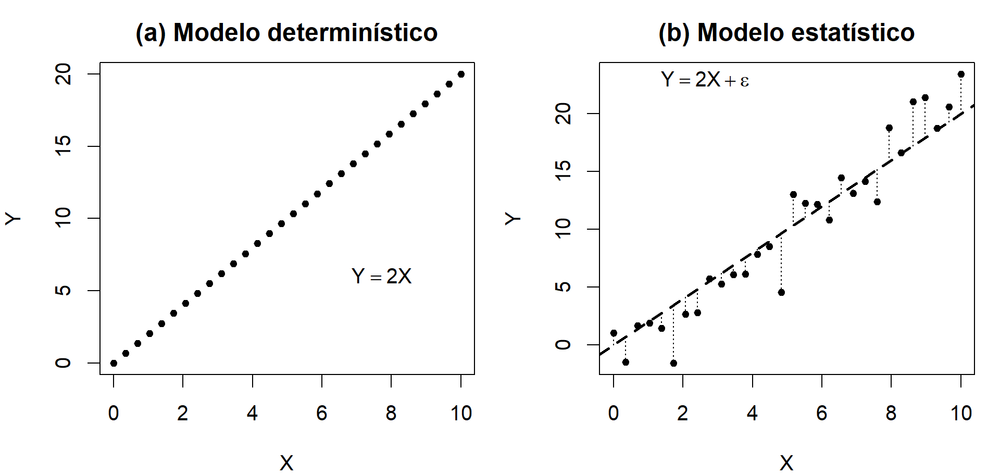
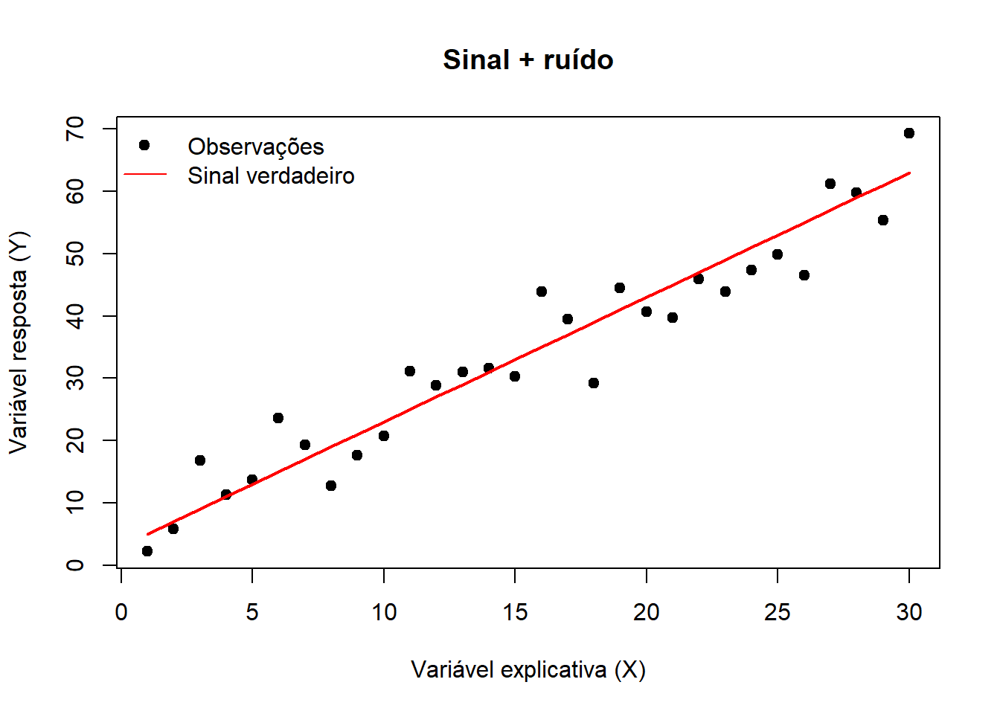
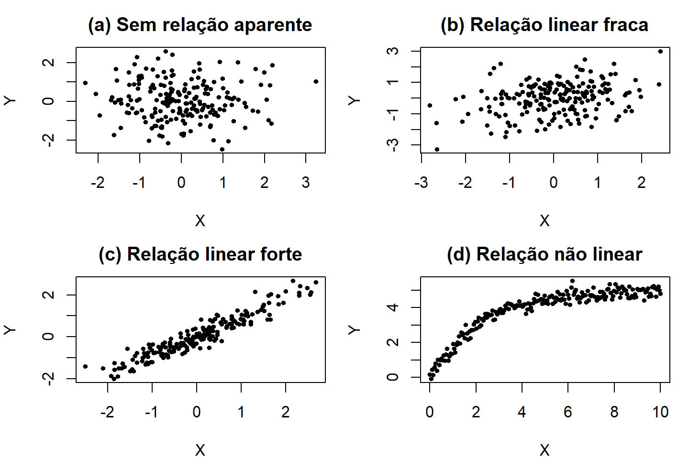
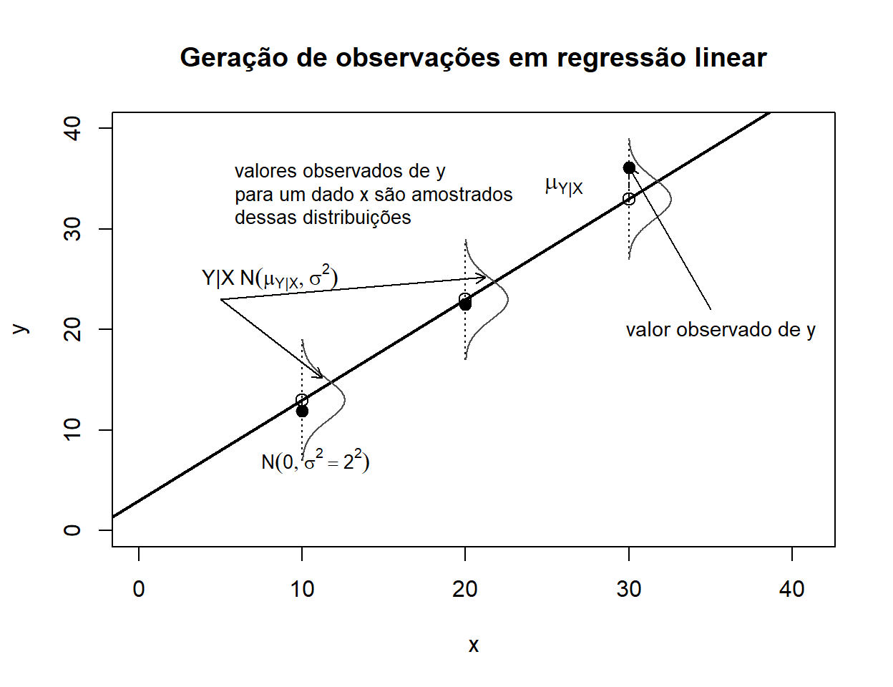

2 Modelagem Estatística e Regressão
2.1 Introdução à Modelagem
A construção de um modelo estatístico começa com a definição do problema que se deseja estudar. Antes da escolha de métodos ou algoritmos, é necessário estabelecer quais perguntas se pretende responder, quais informações estão disponíveis e quais dados podem ser utilizados para investigá-las. Nesse contexto, a regressão constitui uma das ferramentas empregadas dentro do processo mais amplo de modelagem estatística.
Modelar consiste em construir uma representação simplificada de um fenômeno real com o objetivo de compreendê-lo, descrevê-lo, realizar previsões ou apoiar decisões. Essa representação utiliza variáveis, relações matemáticas e hipóteses para destacar aspectos relevantes do problema analisado.
2.1.1 Modelos começam com perguntas
A modelagem estatística tem início com uma pergunta sobre um fenômeno de interesse. Perguntas como “quais fatores estão associados ao desempenho escolar?”, “como a produtividade agrícola varia com a quantidade de chuva?” ou “como o consumo de energia depende da temperatura ambiente?” motivam a construção de modelos capazes de organizar informações e orientar a análise dos dados.
Uma mesma base de dados pode responder a perguntas diferentes e, por isso, dar origem a modelos distintos. A definição do objetivo da análise influencia a escolha das variáveis, a forma de representar o fenômeno e a interpretação dos resultados obtidos.
Em termos gerais, a modelagem estatística procura responder à seguinte questão:
Como representar um fenômeno de interesse de forma suficientemente simples para ser estudado e, ao mesmo tempo, suficientemente fiel para fornecer respostas úteis ao problema investigado?
A modelagem estatística procura representar fenômenos do mundo real por meio de estruturas que possam ser estudadas com o auxílio dos dados. Esse processo envolve definir objetivos, selecionar variáveis, estabelecer relações entre elas, formular hipóteses e avaliar se o modelo construído é adequado para responder à pergunta que motivou a análise.
É importante compreender que um modelo não é a realidade. Trata-se de uma representação simplificada, construída para destacar aspectos relevantes do problema analisado. Todo modelo envolve escolhas, como quais variáveis incluir, quais fatores deixar de fora e qual estrutura utilizar para descrever as relações observadas. Essas decisões dependem do objetivo da análise, dos dados disponíveis e do contexto em que o problema está inserido.
À medida que um modelo incorpora mais detalhes do fenômeno estudado, tende a aproximar-se melhor da realidade, mas também pode tornar-se mais complexo, difícil de interpretar e exigir informações que nem sempre estão disponíveis. Por outro lado, modelos muito simples podem deixar de representar aspectos importantes do problema.
Na prática, a construção de um modelo envolve buscar um equilíbrio entre simplicidade e capacidade de representação. O objetivo não é reproduzir perfeitamente a realidade, mas desenvolver uma aproximação suficientemente adequada para responder às perguntas de interesse e apoiar a análise dos dados.
Um mesmo conjunto de dados pode ser utilizado para responder perguntas diferentes. Em algumas situações, o objetivo é compreender como variáveis estão associadas; em outras, realizar previsões ou subsidiar decisões. Assim, a escolha de um modelo depende da finalidade da análise e não apenas dos dados disponíveis.
A Tabela a seguir apresenta alguns exemplos de problemas que podem ser estudados por meio de modelos estatísticos.
| Área | Exemplo de problema |
|---|---|
| Educação | Investigar fatores associados ao desempenho dos estudantes |
| Economia | Avaliar a relação entre renda e anos de escolaridade |
| Saúde | Estudar fatores relacionados à incidência de uma doença |
| Engenharia | Modelar o consumo de energia de um equipamento |
| Meio ambiente | Relacionar precipitação e produtividade agrícola |
Observe que todos esses exemplos compartilham uma característica comum: existe uma variável de interesse cujo comportamento se deseja compreender ou prever a partir de outras informações disponíveis. Essa é precisamente a situação em que os modelos de regressão se tornam ferramentas particularmente úteis.
2.1.2 Modelo matemático versus modelo estatístico
Em muitas situações, é possível descrever um fenômeno por meio de relações matemáticas exatas. Por exemplo, em determinadas condições físicas, a distância percorrida por um objeto pode ser calculada diretamente a partir da velocidade e do tempo. Nesses casos, conhecendo as variáveis envolvidas, o resultado é completamente determinado.
Entretanto, fenômenos observados em áreas como economia, saúde, educação e ciências sociais raramente apresentam esse comportamento. Mesmo indivíduos ou unidades com características semelhantes podem produzir respostas diferentes em razão de fatores não observados, erros de medição ou variabilidade inerente ao processo estudado. Essa diferença motiva a distinção entre modelos determinísticos e modelos estatísticos.
De forma simplificada:
Modelo determinístico: estabelece uma relação funcional em que o valor da resposta é completamente determinado pelas variáveis de entrada.
Modelo estatístico: admite que parte da variabilidade observada não pode ser explicada pelas variáveis incluídas no modelo e incorpora explicitamente uma componente aleatória para representar essa incerteza.
Suponha que o custo de um produto seja exatamente R$ 2,00 por unidade. Nesse caso,
\[ Y = 2X, \]
em que \(X\) representa a quantidade adquirida e \(Y\) o valor total pago. Se forem compradas cinco unidades, o custo será necessariamente R$ 10,00. Nesse exemplo, o valor de \(Y\) é completamente determinado pelo valor de \(X\), sem incerteza ou variabilidade.
Em muitos problemas, entretanto, duas observações com o mesmo valor de \(X\) não apresentam necessariamente o mesmo valor de \(Y\). Por exemplo, dois estudantes que dedicam cinco horas semanais aos estudos podem obter notas diferentes em razão de fatores como qualidade do ensino, hábitos de estudo, motivação ou características individuais que não foram observadas.
Nesse caso, o modelo procura descrever a tendência geral observada nos dados, reconhecendo que nem toda a variabilidade pode ser explicada pelas variáveis incluídas na análise. Uma forma simples de representar essa situação é escrever
\[ Y = 2X + \varepsilon, \]
em que \(\varepsilon\) representa a parcela da variabilidade que não é explicada pela relação sistemática entre \(X\) e \(Y\).
A diferença entre essas duas estruturas pode ser visualizada na simulação abaixo.
Observe que, no modelo estatístico, os pontos não coincidem exatamente com uma única reta. Ainda assim, eles se distribuem em torno de uma tendência bem definida. O objetivo do modelo não é reproduzir perfeitamente cada observação individual, mas representar o comportamento geral do fenômeno e quantificar a relação existente entre as variáveis.
Antes de ajustar qualquer modelo, é recomendável examinar os dados graficamente. Diagramas de dispersão frequentemente revelam tendências, curvaturas, agrupamentos e observações atípicas que orientam a escolha de uma representação adequada.
2.1.3 O ciclo da modelagem
A construção de um modelo estatístico pode ser vista como um processo composto por várias etapas interdependentes. Embora diferentes autores proponham organizações distintas, uma sequência típica envolve:
- Definir o problema e os objetivos da análise;
- Identificar as variáveis relevantes e obter os dados;
- Escolher uma representação adequada para o fenômeno estudado;
- Estimar os parâmetros do modelo com base nos dados disponíveis;
- Avaliar se o modelo descreve adequadamente o problema de interesse;
- Interpretar os resultados e comunicar as conclusões.
Na prática, essas etapas raramente são executadas apenas uma vez. A análise dos resultados pode indicar a necessidade de revisar hipóteses, incluir novas variáveis, modificar a estrutura do modelo ou até mesmo reformular a pergunta inicial. Por esse motivo, a modelagem estatística é frequentemente descrita como um processo iterativo.
2.1.4 Exemplos de modelagem
Modelos estatísticos são utilizados em diferentes áreas para compreender relações entre variáveis, produzir previsões e apoiar decisões. Alguns exemplos incluem:
- investigar fatores associados ao desempenho escolar;
- estudar a relação entre renda e escolaridade;
- analisar como condições climáticas influenciam a produtividade agrícola;
- estimar o consumo de energia de um equipamento a partir de suas características de operação;
- avaliar fatores relacionados à incidência de uma determinada doença.
Embora esses problemas pertençam a áreas distintas, todos envolvem a tentativa de representar quantitativamente um fenômeno de interesse utilizando dados observados.
2.2 Introdução à Regressão
Os modelos de regressão constituem uma classe de modelos estatísticos desenvolvidos para investigar como uma variável resposta, denotada por \(Y\), está relacionada a uma ou mais variáveis explicativas. Seu objetivo pode ser descrever associações, compreender padrões presentes nos dados, produzir previsões ou apoiar processos de tomada de decisão.
Em muitos problemas práticos, entretanto, não esperamos que uma variável explicativa determine exatamente o valor da variável resposta. Dois estudantes que estudam durante cinco horas por semana podem obter notas diferentes; duas propriedades rurais submetidas às mesmas condições climáticas podem apresentar produtividades distintas; dois pacientes com características semelhantes podem responder de forma diferente a um tratamento. A existência dessa variabilidade é uma característica natural dos fenômenos observados.
Por esse motivo, a regressão procura modelar o comportamento médio da variável resposta para determinados valores das variáveis explicativas. Essa ideia é formalizada pelo conceito de média condicional,
\[ E(Y \mid X), \]
que representa o valor esperado de \(Y\) entre todas as unidades que compartilham um mesmo valor de \(X\).
Assim, o objetivo da regressão não é reproduzir exatamente cada observação individual, mas descrever como o valor médio esperado da variável resposta varia em função das variáveis explicativas. Essa perspectiva constitui um dos pilares da regressão moderna e está presente em textos clássicos de Estatística e Econometria (Charnet et al., 2008; Gujarati, 2006; Hoffmann, 2006).
É importante destacar que a regressão modela a média condicional e não relações determinísticas. Consequentemente, diferenças entre valores observados e valores esperados não representam necessariamente falhas do modelo, mas refletem a variabilidade inerente aos dados e a influência de fatores que não foram incorporados à análise.
2.2.1 Decomposição em componente sistemática e componente aleatória
Uma forma conveniente de representar essa ideia consiste em decompor cada observação em duas partes:
- uma componente sistemática, responsável por descrever a estrutura média da relação entre as variáveis; e
- uma componente aleatória, responsável por representar a variabilidade que permanece mesmo após consideradas as variáveis explicativas.
Essa decomposição aparece de forma recorrente na literatura de regressão aplicada e constitui a base conceitual de diversos modelos estatísticos (Draper; Smith, 1998; Kutner et al., 2005; Montgomery; Peck; Vining, 2021).
A presença de uma componente aleatória não significa que o modelo esteja incorreto ou incompleto. Pelo contrário, ela reconhece explicitamente que fenômenos reais são influenciados por inúmeros fatores difíceis de observar ou medir. Além disso, mesmo processos aparentemente idênticos apresentam flutuações naturais decorrentes de sua própria variabilidade.
2.2.2 Formulação aditiva
A representação mais conhecida dessa decomposição é o modelo aditivo,
\[ Y = \mu(X) + \varepsilon, \]
em que:
- \(\mu(X)\) representa a componente sistemática ou função de regressão;
- \(\varepsilon\) representa a componente aleatória.
No modelo aditivo clássico, assume-se que
\[ E(\varepsilon \mid X)=0. \]
Sob essa hipótese,
\[ E(Y \mid X)=\mu(X), \]
de modo que a função \(\mu(X)\) pode ser interpretada como a média condicional da variável resposta.
Essa interpretação possui grande importância prática. Em vez de tentar explicar cada observação individualmente, o modelo descreve a tendência média do fenômeno para diferentes valores das variáveis explicativas. Desse modo, observações individuais podem situar-se acima ou abaixo da curva média sem que isso comprometa a validade do modelo.
2.2.3 Formulação multiplicativa
Em alguns contextos, é mais apropriado representar a variabilidade de forma proporcional ao nível esperado da resposta. Nesses casos, utiliza-se uma estrutura multiplicativa,
\[ Y = \mu(X)\,\varepsilon, \]
assumindo-se
\[ E(\varepsilon \mid X)=1. \]
Assim,
\[ E(Y \mid X)=\mu(X), \]
preservando a interpretação da função de regressão como média condicional.
A principal diferença entre as formulações aditiva e multiplicativa está na maneira como a variabilidade atua sobre o fenômeno. No modelo aditivo, o erro produz desvios absolutos em torno da média. Já no modelo multiplicativo, o erro atua como um fator proporcional, fazendo com que a dispersão aumente ou diminua juntamente com o nível esperado da resposta.
Fenômenos econômicos, biológicos e ambientais frequentemente apresentam esse comportamento proporcional, razão pela qual modelos multiplicativos podem oferecer representações mais adequadas em determinadas aplicações.
2.2.4 Uma visão mais geral da regressão
As formulações aditiva e multiplicativa desempenham papel importante na construção da intuição sobre modelos de regressão, mas não representam todas as possibilidades existentes.
Em abordagens mais gerais, a aleatoriedade é incorporada diretamente pela distribuição probabilística da variável resposta. Em vez de escrever explicitamente um termo de erro, especifica-se que
\[ Y \mid X \sim \mathcal{F}(\mu,\phi), \]
em que \(\mathcal{F}\) representa uma distribuição apropriada para o problema em estudo e \(\mu\) corresponde à média condicional.
Essa perspectiva é adotada, por exemplo, nos Modelos Lineares Generalizados. Sob esse ponto de vista, o modelo de regressão linear simples pode ser interpretado como um caso particular em que a variável resposta possui distribuição Normal e sua média é descrita por uma função linear das variáveis explicativas.
Ao longo deste livro, a formulação aditiva será utilizada como ponto de partida por seu valor didático e por fornecer a base para o desenvolvimento do modelo de regressão linear simples. Entretanto, é importante reconhecer que ela faz parte de um conjunto mais amplo de estratégias de modelagem estatística, todas fundamentadas na ideia de representar o comportamento médio da variável resposta respeitando sua natureza probabilística.
A diferença fundamental entre as formulações aditiva e multiplicativa está na forma como a variabilidade é incorporada ao modelo. No modelo aditivo, o erro representa um deslocamento absoluto em torno da média condicional: a componente aleatória soma-se ao valor esperado, produzindo oscilações cuja magnitude, em princípio, não depende do nível médio da resposta. Já no modelo multiplicativo, o erro atua como um fator proporcional, ampliando ou reduzindo o valor esperado de acordo com sua própria intensidade. Nesse caso, a variabilidade tende a acompanhar a escala do fenômeno.
Essa distinção possui importantes implicações práticas. Em estruturas aditivas, admite-se que a dispersão permaneça aproximadamente constante ao longo da faixa de valores da resposta. Em estruturas multiplicativas, por outro lado, é comum que a dispersão aumente ou diminua proporcionalmente ao nível médio. Fenômenos econômicos, biológicos e ambientais frequentemente apresentam esse comportamento, como ocorre em medidas de renda, produção, crescimento populacional e biomassa.
A escolha entre uma estrutura aditiva ou multiplicativa depende tanto de argumentos teóricos quanto das características observadas nos dados. Em algumas situações, modelos fundamentados na teoria sugerem relações proporcionais; em outras, inspeções gráficas ou análises exploratórias indicam que a variabilidade cresce com o valor esperado da resposta. Assim, a forma funcional adotada deve refletir o conhecimento sobre o fenômeno estudado e o comportamento empírico dos dados (Gujarati, 2006; Hoffmann, 2006).
É importante observar que as formulações aditiva e multiplicativa representam maneiras distintas de introduzir a componente aleatória no modelo, mas ambas preservam o mesmo objetivo fundamental: descrever a média condicional da variável resposta em função das variáveis explicativas. Sob essa perspectiva, a regressão procura explicar o comportamento médio do fenômeno, e não reproduzir exatamente cada observação individual.
2.2.5 Interpretação conceitual: sinal e ruído
Uma das ideias centrais da regressão é que os dados observados podem ser entendidos como a combinação entre uma estrutura sistemática e uma componente aleatória. Em outras palavras, assume-se que parte do comportamento da variável resposta pode ser explicada pelas variáveis incluídas no modelo, enquanto outra parte permanece sujeita a variações que não são completamente previsíveis.
De forma esquemática,
\[ Y = \text{sinal} + \text{ruído}. \]
O sinal representa a parcela do fenômeno que pode ser descrita pelo modelo estatístico. Já o ruído corresponde à variabilidade que permanece mesmo após consideradas as variáveis explicativas. Essa variabilidade pode estar associada, por exemplo, a:
- variáveis que não foram observadas ou incluídas na análise;
- erros de mensuração;
- diferenças individuais entre unidades aparentemente semelhantes;
- flutuações naturais do processo estudado;
- outras fontes de variabilidade inerentes ao fenômeno.
É importante destacar que a existência de ruído não significa que o modelo esteja incorreto. Pelo contrário, reconhecer explicitamente essa variabilidade constitui uma das principais diferenças entre modelos estatísticos e modelos puramente determinísticos. Em aplicações reais, mesmo quando existe uma relação bem definida entre as variáveis, dificilmente todas as observações estarão exatamente sobre uma mesma curva.
Essa interpretação também ajuda a compreender por que a regressão procura modelar o comportamento médio da variável resposta. Ainda que seja possível identificar uma tendência clara nos dados, observações individuais podem apresentar valores acima ou abaixo dessa tendência em razão da variabilidade inerente ao fenômeno estudado.
2.2.5.1 Exemplo ilustrativo: sinal e ruído
Considere o modelo
\[ Y = 3 + 2X + \varepsilon, \qquad \varepsilon \sim N(0,5^2). \]
Nesse exemplo, a reta
\[ Y = 3 + 2X \]
representa o sinal verdadeiro do fenômeno, enquanto o termo \(\varepsilon\) introduz variabilidade aleatória em torno dessa tendência.
O gráfico abaixo mostra dados simulados segundo esse modelo. Observe que os pontos não coincidem exatamente com a reta, mas permanecem distribuídos ao seu redor. Essa configuração é típica de muitos problemas reais e ilustra uma mensagem importante: a presença de dispersão não impede a existência de um padrão sistemático.
Ao interpretar a figura, vale a pena refletir sobre algumas questões:
- Se o ruído fosse menor, como mudaria a dispersão dos pontos em torno da reta?
- Se o ruído fosse maior, ainda seria possível identificar a tendência linear?
- Caso fossem coletadas novas observações, elas coincidiriam exatamente com as atuais ou apenas apresentariam comportamento semelhante?
Essas perguntas reforçam a ideia de que a regressão não busca reproduzir perfeitamente cada observação individual, mas identificar a estrutura média que governa o fenômeno.

2.2.6 Variáveis não observadas
Na prática, dificilmente é possível medir todos os fatores que influenciam um fenômeno. Características individuais, condições ambientais, erros de mensuração ou aspectos simplesmente desconhecidos podem afetar a variável resposta sem estarem explicitamente representados no modelo.
Esses fatores contribuem para a componente aleatória e ajudam a explicar por que duas unidades com valores idênticos das variáveis explicativas podem apresentar respostas diferentes.
Reconhecer essa limitação não diminui a utilidade da regressão. Pelo contrário, a modelagem estatística admite explicitamente que parte da variabilidade permanece não explicada, buscando representar da melhor forma possível a estrutura sistemática presente nos dados.
2.2.7 Diferentes padrões de relacionamento entre variáveis
Nem toda associação entre duas variáveis segue uma relação linear simples. Em alguns casos, praticamente não existe associação; em outros, a relação linear é evidente; também existem situações em que o padrão é curvilíneo ou assume formas mais complexas.
A Figura a seguir apresenta quatro cenários frequentes.
- (a) Ausência de relação aparente: conhecer o valor de \(X\) fornece pouca ou nenhuma informação sobre \(Y\).
- (b) Relação linear fraca: existe uma tendência geral, porém acompanhada de elevada dispersão.
- (c) Relação linear forte: os pontos permanecem próximos de uma reta, indicando uma associação linear bem definida.
- (d) Relação não linear: existe dependência entre as variáveis, mas uma reta não descreve adequadamente o comportamento observado.
Esses exemplos ilustram que o primeiro passo da modelagem consiste em compreender como as variáveis se relacionam antes mesmo da escolha de um modelo estatístico. Em muitas aplicações, uma simples inspeção visual já fornece indícios importantes sobre a presença de tendências, curvaturas, agrupamentos ou ausência de associação.
Ao analisar a figura, procure responder às seguintes perguntas:
- Em quais painéis uma reta parece representar adequadamente o comportamento médio dos dados?
- Em quais situações o conhecimento de \(X\) contribui pouco para prever \(Y\)?
- Em qual cenário existe uma relação evidente entre as variáveis, mas uma reta provavelmente não é a melhor representação?
Essas reflexões mostram que a regressão linear é uma ferramenta poderosa, mas sua utilização pressupõe que a forma funcional escolhida seja compatível com o comportamento observado nos dados. Nos capítulos seguintes, serão discutidos métodos para avaliar essa adequação e, quando necessário, considerar estruturas mais apropriadas.
Também é importante lembrar que uma associação estatística, por mais forte que seja, não implica necessariamente uma relação de causa e efeito. A interpretação dos resultados depende do contexto científico, do delineamento do estudo, da forma como os dados foram obtidos e das hipóteses adotadas na análise.

A inspeção visual de gráficos de dispersão costuma ser uma das primeiras etapas de uma análise de regressão. Em muitos casos, ela permite identificar tendências aproximadamente lineares, relações curvilíneas, agrupamentos, mudanças na variabilidade, observações atípicas e outros padrões que dificilmente seriam percebidos apenas por meio de tabelas ou medidas-resumo.
Embora a inspeção gráfica não substitua procedimentos formais de modelagem, ela frequentemente fornece informações valiosas para orientar a escolha de modelos e evitar especificações inadequadas.
2.2.7.1 O que observar em um diagrama de dispersão?
Antes de ajustar qualquer modelo de regressão, é recomendável examinar cuidadosamente o diagrama de dispersão entre as variáveis. Muitas decisões importantes sobre a modelagem podem ser orientadas por essa inspeção inicial.
Ao observar um gráfico desse tipo, algumas perguntas podem servir como guia:
- Existe algum padrão visível de associação entre as variáveis ou os pontos parecem distribuídos aleatoriamente?
- Uma reta parece representar adequadamente a tendência média dos dados ou há indícios de curvatura?
- A associação, quando presente, parece positiva ou negativa?
- A dispersão dos pontos em torno da tendência parece aproximadamente constante ou varia ao longo do domínio de \(X\)?
- Existem observações isoladas que possam merecer investigação mais detalhada?
- Há grupos distintos de observações que possam indicar populações diferentes ou fatores não considerados na análise?
Responder a essas perguntas não exige cálculos ou testes estatísticos. Muitas vezes, uma inspeção gráfica cuidadosa já fornece informações valiosas sobre o comportamento dos dados e auxilia na escolha de modelos mais adequados.
Portanto, a regressão não consiste simplesmente em ajustar uma reta aos dados. Ela faz parte de um processo de modelagem estatística que envolve compreender o fenômeno de interesse, analisar os padrões presentes nas observações e escolher uma representação compatível com os objetivos do estudo e com as características dos dados disponíveis.
Vale destacar que uma associação forte entre duas variáveis não implica, por si só, que uma seja a causa da outra. Em muitos casos, ambas podem estar relacionadas a um terceiro fator não observado ou a coincidências presentes nos dados. Da mesma forma, uma associação aparentemente fraca não significa ausência de informação útil, pois relações não lineares ou efeitos combinados com outras variáveis podem não ser evidentes em uma análise bivariada simples.
Por esse motivo, os gráficos de dispersão devem ser interpretados como ferramentas exploratórias que auxiliam na compreensão inicial dos dados, mas não substituem a construção, avaliação e interpretação cuidadosa de modelos estatísticos.
2.3 Objetivos e estruturas dos modelos de regressão
Ao longo deste capítulo, vimos que a regressão procura representar a relação entre uma variável resposta e uma ou mais variáveis explicativas. Entretanto, essa representação pode ser utilizada com finalidades distintas, dependendo do problema investigado.
De modo geral, os modelos de regressão atendem a três grandes objetivos.
Descrever e compreender relações entre variáveis.
Busca-se identificar como a variável resposta tende a variar quando as variáveis explicativas se modificam, quantificando essas associações por meio de parâmetros do modelo.Realizar previsões.
Uma vez ajustado o modelo, ele pode ser utilizado para estimar valores da variável resposta para novas observações ou para situações ainda não observadas.Apoiar decisões e comparações.
Em muitas aplicações, o interesse está em avaliar o efeito de uma variável levando em consideração outras características do problema, permitindo comparações condicionais e subsidiando decisões baseadas em evidências.
Na prática, esses objetivos frequentemente aparecem de forma combinada. Um pesquisador pode ajustar um modelo para compreender um fenômeno e, ao mesmo tempo, utilizá-lo para realizar previsões ou avaliar cenários alternativos.
Mais importante do que decorar essas finalidades é compreender que todas elas dependem da capacidade do modelo de representar adequadamente a estrutura presente nos dados.
2.3.1 Estudos observacionais e experimentais
A interpretação de um modelo de regressão depende não apenas dos dados disponíveis, mas também da forma como esses dados foram obtidos.
Em um estudo observacional, o pesquisador apenas registra informações sobre as unidades analisadas, sem interferir nas condições em que elas se encontram. Pesquisas econômicas, levantamentos populacionais e estudos epidemiológicos são exemplos comuns dessa situação.
Já em um estudo experimental, o pesquisador controla deliberadamente algum fator de interesse, como um tratamento, uma dose ou uma intervenção, e observa seus efeitos sobre a variável resposta. Ensaios clínicos randomizados e experimentos agrícolas são exemplos típicos.
Essa distinção é importante porque influencia o tipo de conclusão que pode ser obtida. Em estudos observacionais, a regressão identifica padrões de associação entre variáveis, mas a interpretação causal exige hipóteses adicionais e conhecimento do contexto. Em estudos experimentais bem planejados, o controle sobre a atribuição dos tratamentos pode fornecer evidências mais fortes sobre relações de causa e efeito.
Assim, antes mesmo de ajustar um modelo, é essencial compreender como os dados foram produzidos e quais perguntas científicas eles permitem responder.
2.3.2 Uma interpretação probabilística da regressão
Até este ponto, discutimos a regressão como uma ferramenta para identificar tendências médias. Essa mesma ideia pode ser interpretada sob uma perspectiva probabilística.
Para um mesmo valor das variáveis explicativas, a variável resposta não assume necessariamente um único valor. Em geral, diferentes unidades com características semelhantes apresentam respostas diferentes em razão da variabilidade inerente ao fenômeno estudado.
Assim, para cada valor fixado de \(X\), podemos imaginar uma distribuição de possíveis valores para \(Y\). O papel do modelo de regressão é descrever como essas distribuições se comportam e, principalmente, como suas médias variam quando \(X\) se modifica.
Essa interpretação complementa a formulação
\[ Y=\mu(X)+\varepsilon, \]
mostrando que o termo aleatório representa justamente a diferença entre uma observação individual e o comportamento médio esperado para aquele valor de \(X\).

A interpretação dessa figura merece atenção.
Cada linha tracejada vertical corresponde a um valor específico da variável explicativa. Para esse valor de \(X\), não existe um único resultado possível para \(Y\), mas sim uma distribuição de resultados que poderiam ser observados caso o processo fosse repetido diversas vezes.
O círculo vazio sobre a reta representa a média condicional dessa distribuição. Já o ponto preenchido corresponde a uma realização particular, isto é, um valor efetivamente observado.
Se novas observações fossem coletadas para o mesmo valor de \(X\), provavelmente seriam obtidos valores diferentes de \(Y\), mas todos tenderiam a se concentrar em torno da mesma média condicional.
Essa interpretação evidencia uma característica essencial da regressão: o modelo procura explicar o comportamento médio da variável resposta, reconhecendo explicitamente a existência de variabilidade entre observações individuais.
Observe também que a largura das distribuições desenhadas ao longo da reta representa a variabilidade existente para cada valor de \(X\). Quanto maior essa dispersão, maior tende a ser a dificuldade de prever valores individuais de \(Y\), ainda que a tendência média esteja corretamente representada pelo modelo.
Em outras palavras, um modelo pode descrever muito bem a média condicional e, ao mesmo tempo, apresentar grande incerteza nas observações individuais. Essa distinção é fundamental para interpretar corretamente os resultados de uma análise de regressão.
2.3.3 Regressão, previsão e causalidade
Os modelos de regressão podem ser utilizados com diferentes finalidades. Em muitas aplicações, o interesse está em compreender como determinadas variáveis estão associadas à variável resposta. Em outras, o principal objetivo é produzir previsões para novas observações ou apoiar processos de tomada de decisão.
É importante destacar que um modelo pode ser extremamente útil para previsão mesmo quando não existe interesse em estabelecer relações de causa e efeito entre as variáveis. Por exemplo, características do histórico de compras de um cliente podem contribuir para prever futuras aquisições, ainda que essas características não sejam, por si só, as causas do comportamento observado.
Da mesma forma, a existência de uma associação estatística entre duas variáveis não implica automaticamente uma relação causal. A interpretação causal depende do conhecimento do problema, do desenho do estudo, da forma como os dados foram coletados e de hipóteses adicionais que vão além do ajuste do modelo estatístico.
Assim, antes de interpretar os resultados de uma regressão, é sempre recomendável perguntar não apenas o que os dados mostram, mas também como esses dados foram produzidos e qual é o objetivo da análise.
2.3.4 O contexto é parte do modelo
Modelos estatísticos não são construídos apenas a partir de números. O conhecimento sobre o fenômeno estudado desempenha papel fundamental em todas as etapas da análise, desde a escolha das variáveis até a interpretação dos resultados.
Dois conjuntos de dados podem apresentar estruturas semelhantes e, ainda assim, exigir modelos diferentes em razão de aspectos específicos do problema, como a forma de coleta das informações, a qualidade das medições, a existência de limitações operacionais ou os objetivos do estudo.
Por esse motivo, a modelagem estatística combina evidências empíricas e conhecimento substantivo. Os dados orientam a análise, mas sua interpretação depende do contexto em que foram produzidos.
2.3.5 Uma pergunta para reflexão
Ao observar um diagrama de dispersão, é natural tentar imaginar uma reta ou uma curva que passe exatamente por todos os pontos. Entretanto, essa raramente é a finalidade de um modelo de regressão.
Reflita sobre as seguintes questões:
- Se dois indivíduos possuem exatamente o mesmo valor de \(X\), eles necessariamente apresentarão o mesmo valor de \(Y\)?
- Caso uma nova observação fosse coletada nas mesmas condições, ela repetiria exatamente um valor já observado ou apenas tenderia a seguir o mesmo padrão geral?
- Um modelo que não passa por todos os pontos pode, ainda assim, representar adequadamente o comportamento médio do fenômeno?
Responder a essas perguntas ajuda a compreender por que a regressão é formulada em termos de médias condicionais e distribuições de probabilidade, e não como uma relação determinística entre variáveis.
2.3.6 Aplicações da regressão
Os modelos de regressão são empregados em praticamente todas as áreas do conhecimento. Alguns exemplos incluem:
- investigar fatores associados ao desempenho escolar;
- relacionar consumo e renda em estudos econômicos;
- avaliar a resposta de pacientes a tratamentos médicos;
- estudar o efeito de condições ambientais sobre a produtividade agrícola;
- analisar o crescimento de organismos ou populações;
- modelar demanda de energia, transporte ou recursos naturais;
- subsidiar avaliações de políticas públicas.
Embora os contextos sejam bastante distintos, todos esses problemas compartilham uma mesma ideia: compreender como a variável resposta se comporta em função de outras variáveis observadas e utilizar essa relação para gerar conhecimento ou apoiar decisões.
A regressão não procura eliminar a variabilidade dos dados. Ela procura compreender essa variabilidade, identificando a parcela que pode ser explicada pelas variáveis observadas e reconhecendo explicitamente a incerteza que permanece.
2.3.7 Um cuidado importante: interpolar não é extrapolar
Modelos de regressão costumam fornecer estimativas confiáveis para valores das variáveis explicativas semelhantes aos observados durante sua construção. Entretanto, utilizar o modelo para fazer previsões muito além dessa faixa pode levar a resultados inadequados.
Por exemplo, se um modelo foi ajustado com dados referentes a estudantes que dedicam entre 2 e 8 horas semanais aos estudos, utilizá-lo para prever o desempenho de alguém que estuda 30 horas por semana envolve uma extrapolação cuja validade depende de hipóteses adicionais sobre o comportamento do fenômeno.
Por esse motivo, previsões devem sempre ser interpretadas à luz do contexto em que o modelo foi construído e dos dados efetivamente disponíveis.
Em síntese, a regressão oferece uma forma estruturada de estudar como uma variável resposta se relaciona com outras variáveis observadas. Seu objetivo não é reproduzir exatamente cada observação, mas representar padrões médios, quantificar associações e fornecer uma base para interpretação, previsão e tomada de decisão.
Ao longo deste livro, veremos como essas ideias podem ser formalizadas matematicamente, estimadas a partir de dados e avaliadas criticamente quanto à sua adequação e às suas limitações.
2.4 A regressão como uma família de modelos
Ao longo deste capítulo, utilizamos exemplos simples para apresentar as ideias fundamentais da regressão. No entanto, é importante compreender que a regressão não corresponde a um único modelo específico, mas a uma família de modelos estatísticos desenvolvidos para responder a diferentes tipos de perguntas e lidar com diferentes características dos dados.
Em todos esses modelos existe um elemento comum: busca-se compreender como uma variável resposta se relaciona com uma ou mais variáveis explicativas, distinguindo uma componente sistemática da variabilidade que permanece não explicada. O que muda entre os diferentes modelos é a forma como essa relação é representada e as hipóteses adotadas para descrever os dados.
Por exemplo, algumas aplicações envolvem variáveis resposta contínuas, como renda, temperatura ou altura. Outras trabalham com contagens, proporções, categorias ou tempos até a ocorrência de um evento. Há ainda situações em que a relação entre as variáveis não pode ser adequadamente representada por uma reta ou em que as observações apresentam estruturas de dependência mais complexas.
Apesar dessa diversidade, muitos conceitos permanecem os mesmos. Ideias como média condicional, variáveis explicativas, parâmetros, variabilidade, ajuste do modelo e interpretação dos resultados aparecem, com diferentes adaptações, em grande parte dos modelos de regressão utilizados na prática.
Neste livro, iniciaremos esse estudo pelo Modelo de Regressão Linear Simples (MRLS). Além de sua importância histórica e prática, ele fornece uma base sólida para compreender princípios que serão reutilizados em modelos mais gerais. Por esse motivo, o MRLS pode ser visto como um ponto de partida para o estudo da modelagem estatística por regressão, e não como seu ponto de chegada.